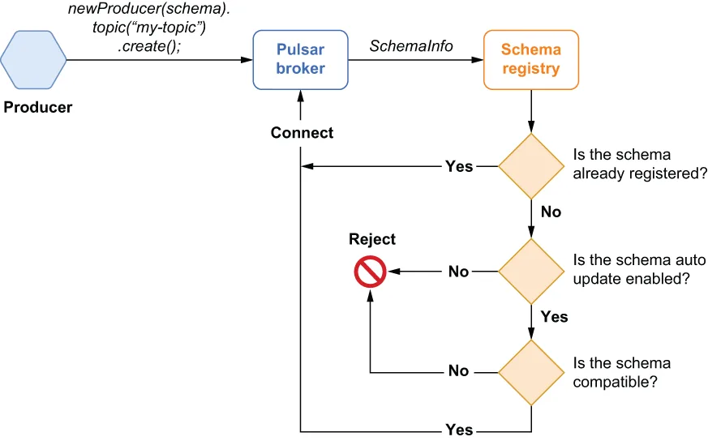
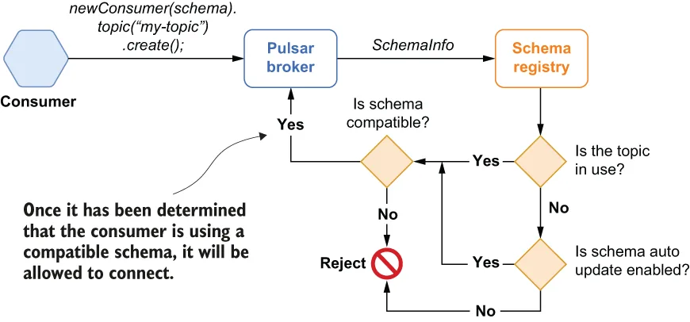

As you may recall, I started this chapter with a discussion of the importance of maintaining compatibility of messages used by microservices, even as requirements and applications evolve. In Pulsar, every producer and consumer is free to use their own schema, so it is quite possible that a topic could contain messages that conform to different schema versions, as shown in figure 7.5, where the topic contains messages with schema version 8 and messages with schema version 9.
你应该还记得，我在本章开头讨论过：即便需求和应用在不断演进，保持微服务所使用消息之间的兼容性依然十分重要。在 Pulsar 中，每个生产者和消费者都可以自由使用各自的 schema，因此完全有可能出现这样一个主题：其中包含了符合不同 schema 版本的消息，如图 7.5 所示——那个主题里既有 schema 版本 8 的消息，也有 schema 版本 9 的消息。
It is important to point out that the schema registry does not ensure that every producer and consumer is using the exact same schema but, rather, that the schemas they are using are compatible with one another. Consider the scenario where a development team changes the schema of the messages it is producing by adding or removing a field or changing one of the existing field types from string to timestamp. In order to maintain the implicit producer-consumer contract and avoid accidently breaking consumer microservices, we need to ensure that the producers are publishing messages that contain all the information the consumers require. Otherwise, we run the risk of introducing messages that will break existing applications because you have removed a field that is required by these applications.
有一点必须指出：schema registry 并不保证每个生产者和消费者都在使用完全相同的 schema，它保证的是他们所使用的 schema 彼此之间是兼容的。设想这样一个场景：某个开发团队改动了自家所生产消息的 schema——增加一个字段、删掉一个字段，或者把某个已有字段的类型从 string 改成 timestamp。为了维系生产者与消费者之间那份隐含的契约、避免不小心把消费方微服务搞坏，我们需要确保生产者发布出来的消息包含了消费者所需的全部信息。否则，我们就要冒这样的风险：引入一些会破坏现有应用的消息，因为你删掉了这些应用所依赖的某个字段。
When you configure the schema registry to validate schema compatibility, the Pulsar schema registry will perform a compatibility check when the producer connects to the topic. If the change will not break the consumers and cause exceptions, the change is considered compatible, and the producer is allowed to connect to the topic and produce messages with the new schema type. This approach helps prevent disparate development teams from introducing changes that break existing applications that are already consuming from Pulsar topics.
当你把 schema registry 配置为校验 schema 兼容性时，Pulsar schema registry 会在生产者连接到主题时执行一次兼容性检查。如果这个改动不会破坏消费者、不会引发异常，那么该改动就被认为是兼容的，生产者也被允许连接到该主题并用新的 schema 类型来生产消息。这种做法有助于防止各个互不相干的开发团队引入那些会破坏已在消费 Pulsar 主题的现有应用的改动。
Producer schema compatibility verification
生产者 schema 兼容性校验
Every time a typed producer connects to a topic, as shown in figure 7.6, it will transmit a copy of the schema it is using to the broker. A SchemaInfo object is created based on the passed-in schema and is passed to the schema registry. If the schema is already associated with the topic, the producer is allowed to connect and can then proceed to publish messages using the specified schema.
每当一个带类型生产者连接到某个主题时，如图 7.6 所示，它都会把自己正在使用的 schema 的一份副本传送给 broker。系统会基于传入的 schema 创建一个 SchemaInfo 对象，并把它交给 schema registry。如果该 schema 已经与该主题关联，生产者就被允许连接，随后便可继续使用指定 schema 来发布消息。

Figure 7.6 The logical flow of the schema validation checks for a typed producer
图 7.6 带类型生产者 schema 校验检查的逻辑流程
If the schema is not already registered with the topic, the schema registry checks the AutoUpdate strategy setting for the associated namespace to determine whether or not the producer is permitted to register a new schema version on the topic. At this point, the producer will be rejected if the policy prohibits the registration of new schema versions. If schema updates are permitted, then the compatibility strategy check is performed, and if it passes, the schema is registered with the schema registry, and the producer is allowed to connect with the new schema version. If the schema is determined to be incompatible, then the producer is rejected.
如果该 schema 尚未在该主题上注册，schema registry 就会检查所属命名空间的 AutoUpdate 策略设置，以判断该生产者是否被允许在这个主题上注册一个新的 schema 版本。此时，如果策略禁止注册新的 schema 版本，生产者就会被拒绝。如果 schema 更新是被允许的，那么接下来会执行兼容性策略检查；若检查通过，该 schema 就被注册进 schema registry，生产者也被允许以这个新 schema 版本连接。如果该 schema 被判定为不兼容，那么生产者就会被拒绝。
Consumer schema compatibility verification
消费者 schema 兼容性校验
Every time a typed consumer connects to a topic, as shown in figure 7.7, it will transmit a copy of the schema it is using to the broker. A SchemaInfo object is created based on the passed-in schema and is passed to the schema registry.
每当一个带类型消费者连接到某个主题时，如图 7.7 所示，它都会把自己正在使用的 schema 的一份副本传送给 broker。系统会基于传入的 schema 创建一个 SchemaInfo 对象，并把它交给 schema registry。

Figure 7.7 The logical flow of the schema validation checks for a typed consumer
图 7.7 带类型消费者 schema 校验检查的逻辑流程
If the topic doesn’t have any active producers or consumers, any registered schemas, or any existing data, then it is considered not in use. In the absence of all of the aforementioned items, the schema registry checks the AutoUpdate strategy setting for the associated namespace to determine whether or not the consumer is permitted to register a new schema version on the topic. The consumer will be rejected if it is prohibited from registering its schema; otherwise, the compatibility strategy check is performed, and if it passes, the schema is registered with the schema registry, and the consumer is allowed to connect with the new schema version. If the schema is determined to be incompatible, then the consumer is rejected. The compatibility check is also performed if the topic is in use.
如果某个主题既没有任何活跃的生产者或消费者，也没有任何已注册的 schema，更没有任何现存数据，那么它就被认为是未被使用（not in use）的。在上述各项都不存在的情况下，schema registry 会检查所属命名空间的 AutoUpdate 策略设置，以判断该消费者是否被允许在这个主题上注册一个新的 schema 版本。如果它被禁止注册自己的 schema，消费者就会被拒绝；否则就会执行兼容性策略检查，若检查通过，该 schema 就被注册进 schema registry，消费者也被允许以这个新 schema 版本连接。如果该 schema 被判定为不兼容，那么消费者就会被拒绝。当主题处于被使用（in use）状态时，同样也会执行这项兼容性检查。